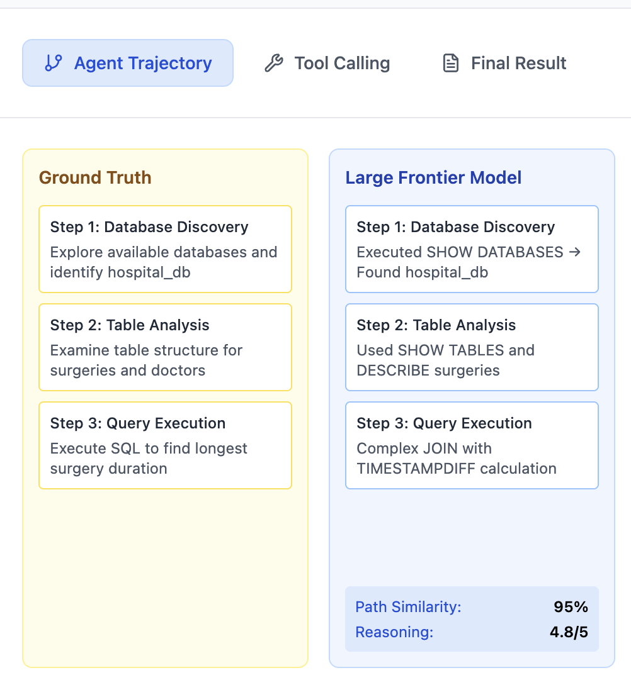
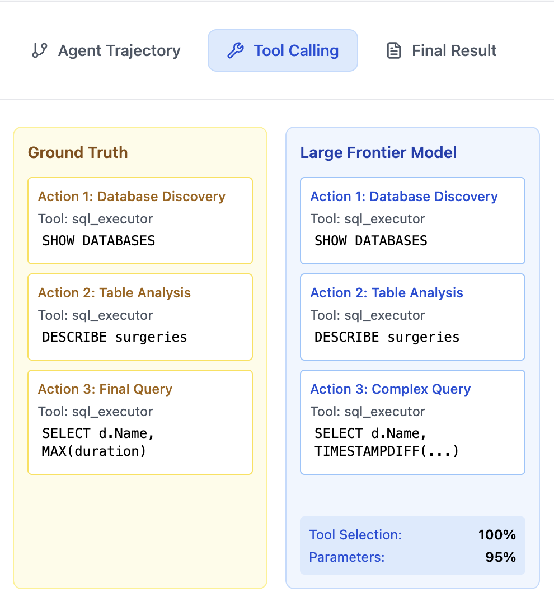
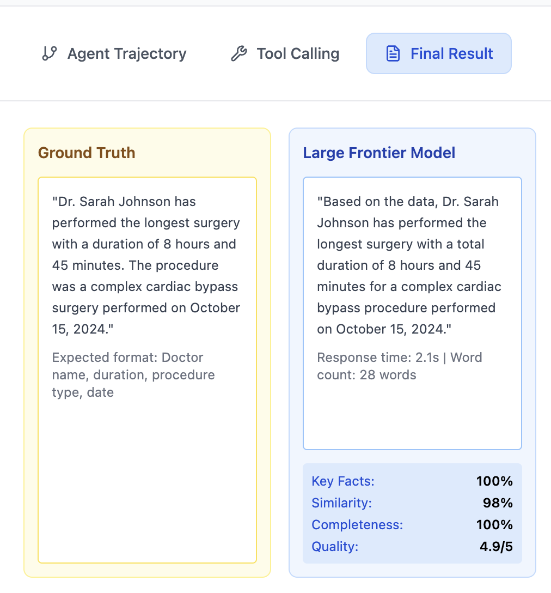

Shaping Agent Behavior Through Trajectory Optimization
Here's something that should bother you more than it probably does.
You build an AI agent, give it a task to work with a real environment — a messy database, a live API, a filesystem with twenty years of accumulated decisions baked in — and it fails. So you fix the prompt. You add more instructions, more examples, a retry loop. But it falls apart: confidently querying tables that don't exist, retrying broken assumptions and giving up halfway telling the user it couldn't find anything. Remember, prompt is an advisory, not a guarantee.
The deeper issue is this: we've been treating agent failures as a knowledge problem — the agent didn't know the right table name, the right API parameter, the right format. So we tell it more things. But knowledge isn't what breaks down. What breaks down is judgment — knowing how to recover when something's wrong and when you actually have enough information to commit.
The cost of guessing in complex environments
To make this concrete, here's an environment that exposes the problem.
A hospital management system. 90+ tables. The kind of database where nothing is named what you'd expect:
- Revenue lives in a column called
NetAmountinside a table calledArItem, not in anything called "Billing" or "Payments." - Doctors are rows in a generic
Usertable. - There are tables with nearly identical names: one current, one a legacy view missing half the keys you need.
Now ask the agent: "How much do patients typically spend per visit?"
Here's what it does:
SHOW TABLES FROM hospital_db
→ sees ArItem, Admission, User, BedTransfer...
SELECT * FROM billing
→ table doesn't exist
SELECT * FROM payments
→ table doesn't exist
"I'm unable to determine billing information."It looked at the schema, saw 90 tables, and still went straight for the obvious guesses. ArItem was right there in the results — it just didn't mean anything without knowing what was inside it. So instead of digging in, it pattern-matched to names that sounded financial.
Before we dive into a fix, let's understand how these agents work under the hood. Every time the agent makes a decision, the framework packages everything that's happened so far — the original question, every action taken, every result returned — and sends it to the model. The model has no persistent memory. It just sees the history and decides what to do next.
Watch what that looks like in practice. This is the context the agent sees at step five of a real interaction:
User: "Which doctors generate the most revenue?"
Action: SHOW TABLES → [ArItem, Admission, User, BedTransfer...]
Action: DESCRIBE ArItem → [NetAmount, PatientId, DoctorUserId...]
Action: DESCRIBE User → [UserId, UserType, Specialty...]
Action: SELECT ... JOIN ... → ERROR: column DoctorUserId doesn't existNo reasoning. No memory of why it chose those tables. Just a trail of actions and results, and now it has to decide what to do next without any of the thinking that got it here.
Optimizing the trajectory, not the output
The path followed above makes the failure pattern consistent. And it points to an obvious fix — if the problem lives inside the decisions, that's where the training needs to go.
Take step five from above. The agent hit an error — column DoctorUserId doesn't exist. It has three prior actions in its history, no memory of its own reasoning, and needs to decide what to do next. The bad instinct is to mutate the query and try again:
SELECT ... DoctorId ... → ERROR: column doesn't exist
SELECT ... DocId ... → ERROR: column doesn't existSame broken assumption, different spelling. The good instinct is to go back and actually check:
DESCRIBE hospital_db.ArItem
→ finds the correct column name: DoctorUserId... wait, it does exist
→ the issue was the JOIN condition, not the columnDo that across hundreds of interactions, and you end up with a model that's been trained on the hard moments specifically — not what a good answer looks like but what good judgment looks like when things are going sideways.
However, there's a problem with this approach. To train on good decision moments, you need examples of good trajectories. And in production, most of what you have is bad ones. So where does the training data actually come from?
Three places:
The first is production traces — real interactions where the agent happened to navigate correctly. Filter ones that explored properly, recovered cleanly, and reached the right answer. They're the most valuable because they're grounded in real environments with real constraints.
The second is using a stronger model to generate good paths. Point a more capable model at the same environment, let it explore, and harvest the resulting trajectories. It's slower and more expensive, but it works for covering cases your production data doesn't.
The third — and most interesting — is repairing broken trajectories.
Instead of throwing away a bad interaction and starting over, you find the exact moment it went wrong and fix just that branch. Here's what that looks like with the hospital database:
Original broken path:
SHOW TABLES → sees ArItem, Admission, User...
SELECT * FROM billing → table doesn't exist
SELECT * FROM payments → table doesn't exist
"I'm unable to determine billing information."The mistake happened at step two. The agent saw the table list but ignored it. So instead of discarding the whole interaction, you repair it:
Repaired path:
SHOW TABLES → sees ArItem, Admission, User...
DESCRIBE hospital_db.ArItem → finds NetAmount, PatientId
SELECT AVG(NetAmount) FROM ArItem → returns answerFrom trajectories to training data
Once you have a pool of good trajectories — from production, generated, or repaired — the next challenge is turning them into something you can actually train on.
The naive approach is to treat each full interaction as one training example. Question goes in, final answer comes out, train on that. But that's exactly the problem we started with. You're back to teaching the destination and ignoring the journey.
Instead, you slice each interaction at every decision point. A six-step interaction doesn't produce one training example — it produces six. Each slice is just a snapshot: here's everything the agent knew up to this moment, here's what the right move was.
For the hospital database interaction, that looks something like this:
Slice 1 — the agent has only the question:
User: "Which doctors generate the most revenue?"
→ Right move: SHOW TABLES. You know nothing. Look around first.Slice 3 — the agent has seen the table list and inspected ArItem:
User: "Which doctors generate the most revenue?"
Action: SHOW TABLES → [ArItem, User, Admission...]
Action: DESCRIBE ArItem → [NetAmount, DoctorUserId, PatientId...]
→ Right move: DESCRIBE User. You know where revenue lives, now find where doctors live.Slice 6 — the agent has verified everything it needs:
User: "Which doctors generate the most revenue?"
Action: SHOW TABLES → ...
Action: DESCRIBE ArItem → NetAmount confirmed
Action: DESCRIBE User → UserType, Specialty confirmed
Action: Verified join path through DoctorUserId
→ Right move: Execute. You have enough. Stop exploring.That last one is critical. Knowing when to stop exploring is just as important as knowing when to start. An agent that keeps checking tables after it already has everything it needs is burning steps and risking drift.
Each slice teaches something different. Early slices teach exploration. Middle slices teach how to interpret what you've found and what to check next. Late slices teach the judgment call.
Train on all of them, and you're not teaching the agent what to think — you're teaching it how to think at every stage of getting to the right answer. The question then is how you run that training without it collapsing back into standard finetuning.
The setup is straightforward. Each slice goes in as a complete interaction — full history, current state, everything the agent would see at that exact moment in a real run. But only one thing gets trained on: the decision at the end. Everything before it gets masked.
It looks like this:
[question + prior actions + tool results] → [reasoning + next action]
masked, no gradient trained on thisNote that not all slices are equally hard. Early steps are relatively obvious — when you know nothing, looking around first is an easy call. The difficult moments are in the middle. Those slices got more weight in training, because that's exactly where good and bad agents diverge.
Same agent, different instincts
The most important thing that changed wasn't the accuracy number. It was what the agent did when things went wrong.
Before:
SELECT * FROM billing → ERROR
SELECT * FROM bills → ERROR
SELECT * FROM invoices → ERROR
"Unable to find billing information."After:
SELECT * FROM billing → ERROR
SHOW TABLES FROM hospital_db → [ArItem, Admission, User...]
DESCRIBE hospital_db.ArItem → finds NetAmount
SELECT AVG(NetAmount) FROM ArItem → correct answerOne error, two completely different instincts. Before, the error was treated as a formatting problem. After, the error was a signal.
That shift showed up consistently across different questions, different failure points, different parts of the schema. The agent wasn't just getting better at the easy cases. It was getting better at recovering from the hard ones.
Evaluating the change
Saying "the agent got better" isn't enough. You need to measure what got better and at what granularity. We evaluate across three dimensions, each capturing a different layer of agent behavior:
1. Agent trajectory optimality. Did the agent take the right path? This compares the sequence of exploration steps against a ground truth trajectory — not just whether it arrived at the answer, but whether it got there efficiently and with sound reasoning at each step.

2. Tool selection and arguments. Did the agent pick the right tools and pass the right parameters? This catches a subtle failure mode: an agent can follow the right high-level plan but still break at execution because it passed the wrong column name or used the wrong SQL function.

3. Final result correctness. Did the agent produce the right answer? This is the obvious metric, but on its own it's misleading — an agent can stumble into the right answer through luck. Combined with trajectory and tool evaluation, it completes the picture.

All three matter. An agent that takes the optimal path but picks the wrong tool fails. An agent that picks the right tools but wanders through unnecessary steps is fragile. An agent that gets the right answer by brute-forcing every possible query hasn't actually learned judgment. The trajectory-trained model improved across all three simultaneously — which is what gives confidence that the behavioral change is real, not just a lucky shortcut.
If you want to go deeper — the full trajectory slicing format, training setup, and implementation details are in the agent-trajectory-optimization repository.